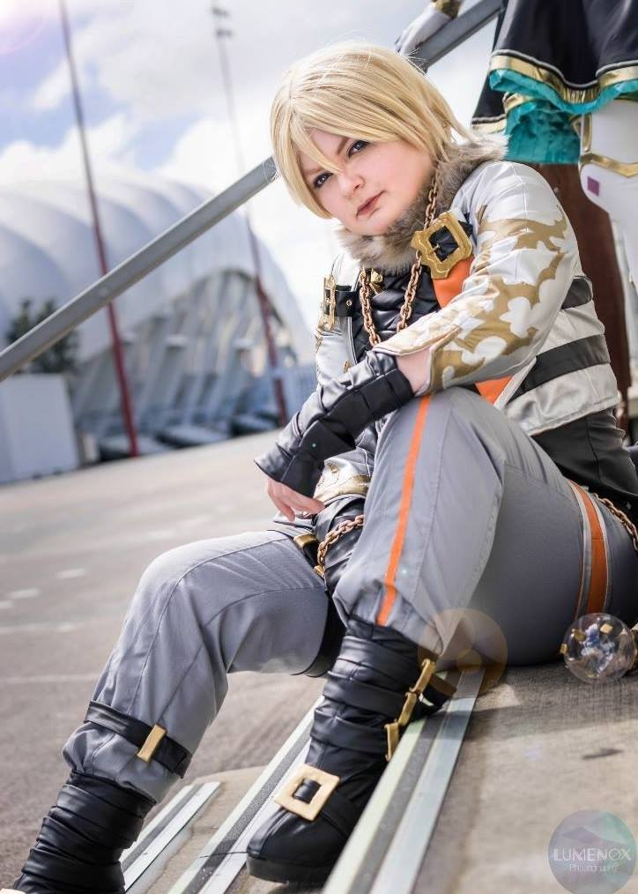

Leo - Tekken 7
Award Notes:
3rd place - Madman national cosplay cup x Overload
Construction Notes:
Made of Pleather primarily, and also garberdine.
Fully lined costume, with hundreds of hours of hand sewn leather applique details.
Pattern made and sewn for a gender neutral/male figure rather than female to try and change/mask my body
shape.